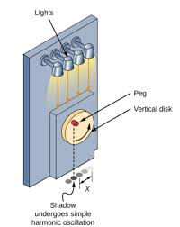

In Topic 6.1, we learned about angular speed in relation to circular motion; it’s the rate of change of angle with time, and is also called angular frequency. It’s measured in radians per second ( ). It’s important to use radians per second because it helps us understand the relationship between SHM and circular motion, shown below in Figure 1. Figure 1: Comparison of SHM and circular motion. A peg is mounted on a turntable that rotates at a constant angular speed. The turntable is illuminated from above, and the shadow projected below undergoes SHM. If you were to set up a pendulum so that it was in line with the peg and oscillated with the same periodic time as the turntable, you wouldn’t see any difference in the shadows.
In mathematical terms, what figure 1 does is equivalent to projecting the two-dimesional motion of a point onto the single dimension of a line. Imagine a point P rotating around the perimeter of a circle with a constant angular speed ω. The radius of the circle r joins P with the centre of the circle O. At time t = 0 the radius is horizontal and at time t it has moved through an angle θ radians. For constant angular speed ω = \frac{θ}{t}, rearranging this gives θ = ωt. Projecting P onto the y-axis gives the vertical component of r as r sin θ. Projecting P onto the x-axis gives the horizontal component of r as r cos θ. The variation of the vertical component with time or angle is shown on the right of fgure 2 and takes the form of a sine curve. Because the rate of rotation is constant, the angle θ or ωt is proportional to time. If we drew a graph of y against t the quantities 2π and π would be replaced by T and __T 2 respectively.